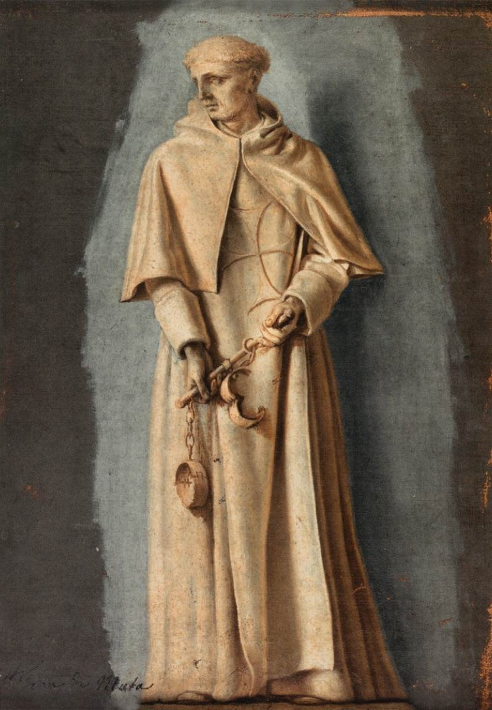
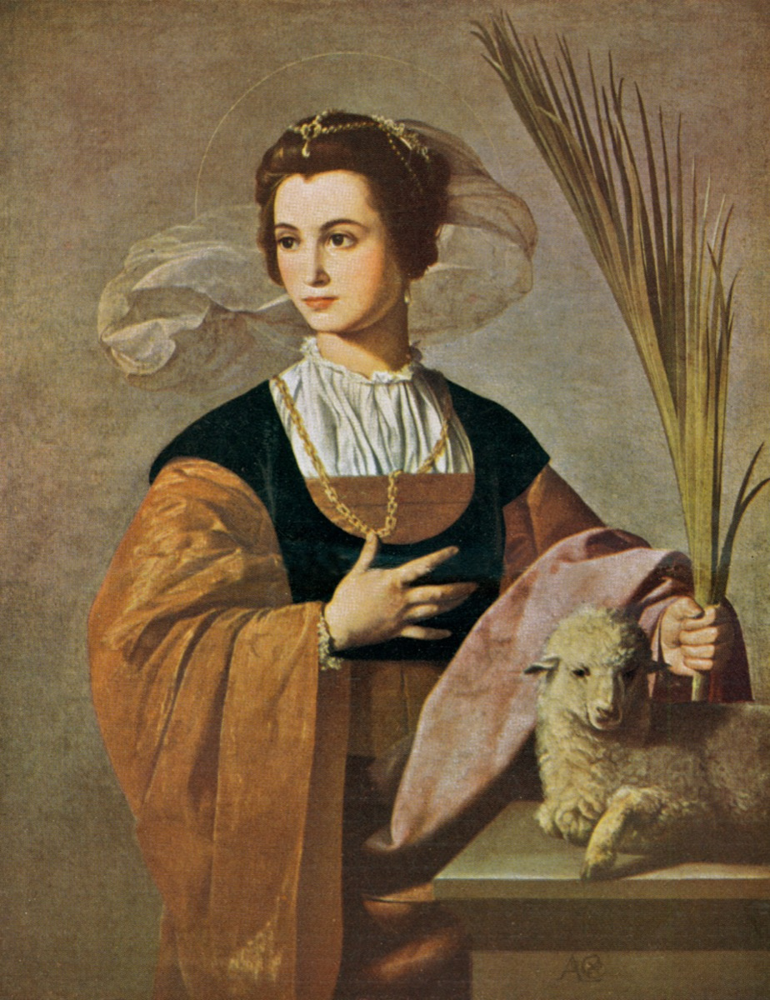
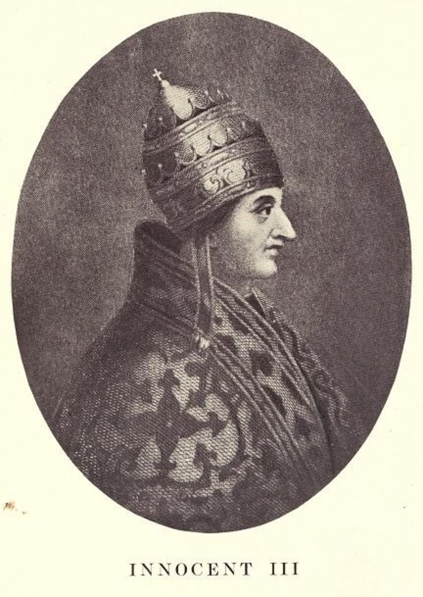
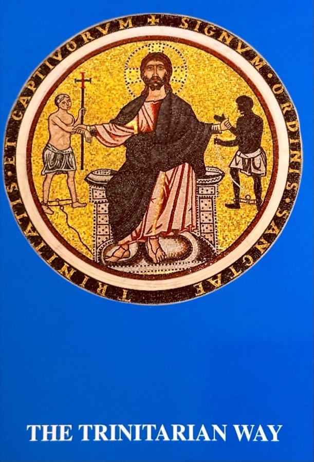

Identity & Charism
Who are the Trinitarians?
The Order of the Most Holy Trinity and of the Captives (O.S.S.T.) is a Catholic clerical religious institute of pontifical right, made up of priests and brothers. It was founded by St. John de Matha, with St. Felix de Valois as co-founder according to tradition, and its Rule was approved by Pope Innocent III on 17 December 1198.
One charism, two ends
The Order exists for two ends that belong together: the glorification of the Most Holy Trinity and the redemption, or ransom, of captives. The second is not a merely historical memory. It continues in the Order’s service of mercy to the persecuted, the poor, the imprisoned, and all who are deprived of freedom or dignity.
The Order’s motto sums up this double commitment: Gloria Tibi Trinitas et Captivis Libertas, “Glory to you, O Trinity, and freedom to the captives.” The two ends are also written into the Order’s name. Its members are called Trinitarians.
The tertia pars
From an early period the Rule required that one third of the Order’s income be set aside for ransoming Christian captives. This tertia pars became one of the Order’s best-known characteristics. The other two thirds supported the community and its works of mercy.
The Order and the Trinitarian Family
The Order strictly refers to the male religious institute of priests and brothers. The Trinitarian Family is wider. It includes the Order, the contemplative Trinitarian nuns, the Hermitesses of the Most Holy Trinity, the sister congregations, the lay Trinitarians of the Third Order, the Oblates of the Most Holy Trinity, and the confraternities and hermandades that grew up around the Order.
These are distinct vocations, not branches of the male Order. A page about the Order should not describe nuns or lay people as members of the Order itself. The common bond is the Trinitarian charism, the cross of red and blue, and the recognition of St. John de Matha as father of the family.
The Cross of the Two Colors
The white Trinitarian habit bears a Greek cross with a red vertical bar over a blue horizontal bar. The three colors are commonly read as a confession of the Trinity: the white field recalls God the Father, the blue bar God the Son as Redeemer, and the red bar God the Holy Spirit, who is charity.
According to the Order’s tradition, the cross comes from the vision granted to St. John de Matha at his first Mass on 28 January 1193. He saw Christ the Redeemer between two captives, one white and one black, and understood that he was called to ransom Christians held in slavery. The vision is depicted in the early thirteenth-century mosaic over the entrance of the old hospital of San Tommaso in Formis in Rome. Its inscription reads Signum Ordinis Sanctae Trinitatis et Captivorum, “Sign of the Order of the Holy Trinity and of the Captives.”
The equal-armed form displays the two bars symmetrically on the breast. Christian tradition also reads the four arms as a sign of the cross reaching out in every direction, a symbolism often linked to Ephesians 3:18.

Patrons and principal saints
- Our Lady of Good Remedy, principal patroness of the Order (Solemnity, 8 October).
- St. Agnes, principal patroness of the Order (Feast, 28 January).
- St. John de Matha, Founder (Solemnity, 17 December).
- St. Felix de Valois, Co-founder according to tradition (Memorial, 4 November).



The Trinitarian Way

On this site, The Trinitarian Way means the Order’s English-language handbook (last published in 2010), not a separate organization or website. It is a formation and prayer book for Trinitarians, especially for the lay Third Order.
The lay rule of life that it serves was approved by the Holy See in 2000; the 2010 book is the English edition cited here. It gathers practical guidance for living the Trinitarian charism: consecration to the Most Holy Trinity, the daily Trisagion, the Order’s proper feast calendar, and related prayers and instructions.
The cover mosaic shows Christ the Redeemer between two captives, with the Latin legend Signum Ordinis Sanctae Trinitatis et Captivorum.
The Order today
The Order is present in Europe, the Americas, Africa, and Asia. The Curia Generalizia is in Rome, near the ancient Trinitarian church of San Tommaso in Formis on the Caelian Hill. The U.S. Province of the Immaculate Heart of Mary serves in parishes, schools, missions, and social ministries.
The Order’s ministry today includes care for persecuted Christians, immigrants, prisoners, the sick, and the poor, as well as parish work, education, and missions. The International Trinitarian Solidarity (SIT) supports Christians at risk and coordinates emergency and advocacy projects.
Sources for this page
- Official Curia Generalizia, Storia.
- Official Curia Generalizia, Trinitarian sisters and laity.
- Official Curia Generalizia, San Tommaso in Formis.
- Official U.S. Province, Our Roots.
- Official U.S. Province, Our Mission Today.
- Secondary Andrew Witko, The Order of the Holy Trinity and Captives (2008).
- Secondary Wikipedia, “Trinitarians”, for the 2000 approval of the lay rule; cross-check only.
Items marked Secondary are academic or reference works, not official publications of the Order. Official texts are normative where they differ.